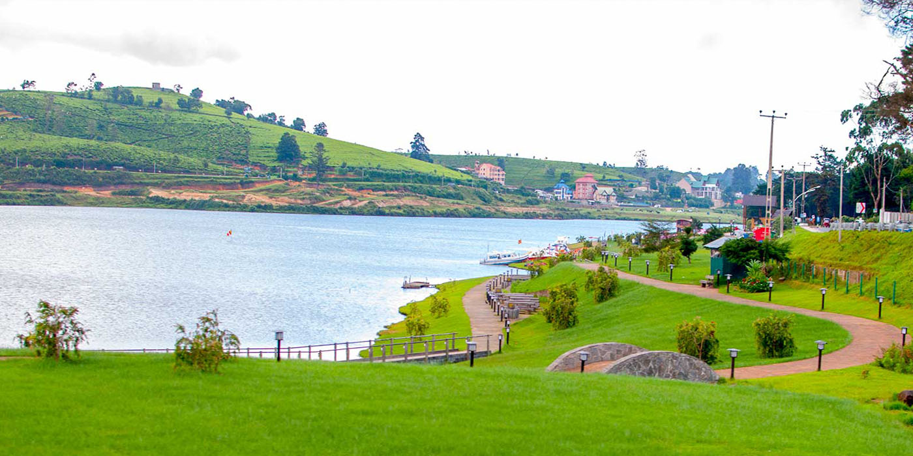

Hill Country

A beautiful and much sought after tourist attraction in Nuwara Eliya is Lake Gregory that is located at the center of the town.
This is a man-made lake built during the British rule and is used for recreation and water sports today.
The scenic grasslands of Horton Plains are a must visit during your stay in Nuwara Eliya.
Breathtaking views and beautiful creatures are what you will see on this chilly and windy point in Sri Lanka.
Due to the widespread species of flora and fauna in this 3000 hectare plateau, Horton Plains was declared a UNESCO world heritage site in 2010.
 Mountain climbing adventure located in a beautiful area of the southern Hill Country, this lofty peak has sparked the
imagination for centuries and been a focus for pilgrimage for more than 1000 years.
Mountain climbing adventure located in a beautiful area of the southern Hill Country, this lofty peak has sparked the
imagination for centuries and been a focus for pilgrimage for more than 1000 years.
 The rugged Knuckles mountain region is perfect for hiking – a land of mystical peaks, chattering waterfalls and hidden hillside villages.
The Knuckles offers breathtaking visas and a remoteness that will appeal to experienced and novice hikers alike.
The rugged Knuckles mountain region is perfect for hiking – a land of mystical peaks, chattering waterfalls and hidden hillside villages.
The Knuckles offers breathtaking visas and a remoteness that will appeal to experienced and novice hikers alike.
 The Bogoda Wooden Bridge was built in the 16th century during the Dambadeniya era. This is said to be the oldest surviving wooden bridge in Sri Lanka.
The bridge is situated at 7 kilometres west of Badulla. All parts of this bridge were constructed from wood, including the use of wooden nails as fixing material.
The Bogoda Wooden Bridge was built in the 16th century during the Dambadeniya era. This is said to be the oldest surviving wooden bridge in Sri Lanka.
The bridge is situated at 7 kilometres west of Badulla. All parts of this bridge were constructed from wood, including the use of wooden nails as fixing material.
Dhowa Rock Temple is a protected heritage site in Sri Lanka, situated in the central mountains of the Uva province. Dhowa is a small, ancient village situated on the Badulla -
Bandarawela main road. This temple is situated 210 km east of Colombo and 120 km south of Kandy.
Lipton’s Seat is a high observation point in the hills of Poonagala. Located on the top of the town’s namesake, Poonagala Hill, it is also near the Dambatenne Tea Factory. Lipton’s Seat
is so named because the famed Scottish baron and tea planter Sir Thomas Lipton used it as the seat to survey his empire in a time long gone but not forgotten.
Ella Rock Hiking up Ella Rock is one of the most popular treks to do in Ella, but is also far more strenuous than the relatively easy climb up Little Adam’s Peak.
The summit is 3,300m above sea level, and 1,000m higher than Ella town, and the views from the top are astonishing. Walk along the railway lines for about half an hour,
accompanied by the local monkeys swinging through the trees, and then begin the ascent up the slope through fields of chilli, tomato, lemon grass and avocado, and look
out for eucalyptus, banana and jack fruit trees. You also pass a large tea plantation and fascinating tropical plants like the Venus fly trap.
When you play golf in Nuwara Eliya you will be transported back a hundred years to Sri Lanka’s British colonial days – at times, you might even feel like you’re in the Scottish Highlands
until you look closely at the tropical plants and flowers surrounding you. Built by a Scottish soldier of the Golan Highlanders for the British servicemen and
officials stationed here in 1889, the course is truly spectacular, set 6,200ft above sea level, surrounded by rolling tea hills and framed by looming mountains.
Nuwara Eliya – known as ‘Little England’ – is a charming hill station which was developed by British planters in the late 1800s. This is evident throughout the town:
as well as a golf club, the British built a racecourse, tea factories, colonial hotels and planters’ bungalows, all of which seem to be frozen in time in a bygone era.
|